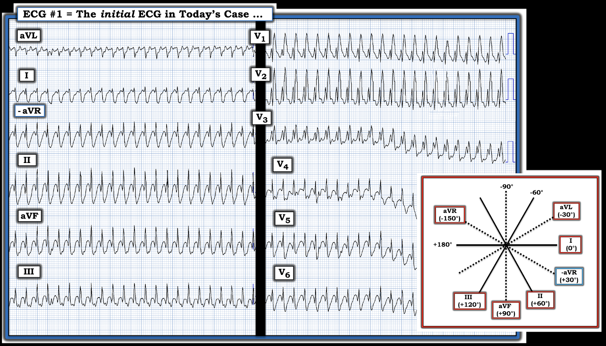
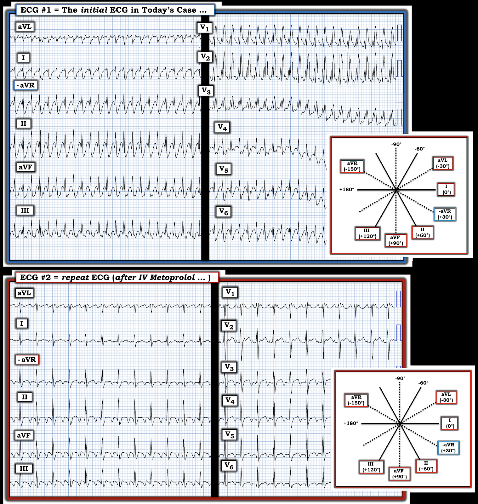
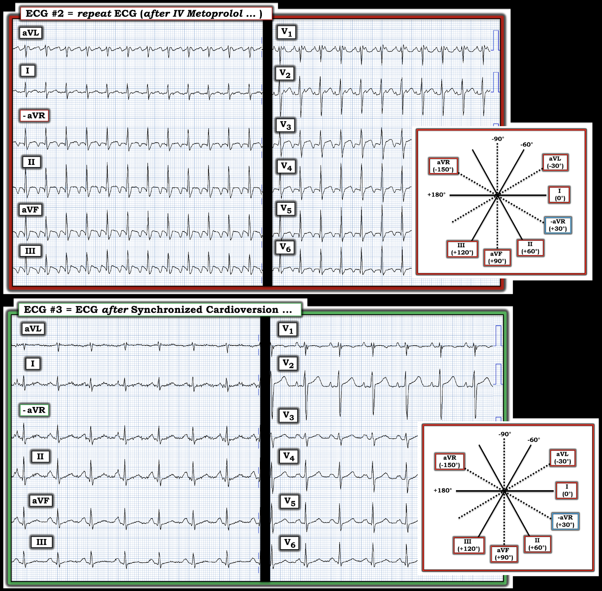

ECG Blog #368 — Sao lại nhanh đến thế?
Tôi bắt đầu ca hôm nay với điện tâm đồ ở Hình 1 — ghi từ một người đàn ông ngoài 30 tuổi, đến khám vì hồi hộp đánh trống ngực.
- BẠN sẽ diễn giải điện tâm đồ ở Hình 1 như thế nào?
- Điều trị?
- Rối loạn nhịp này có gì bất thường?
=========================
LƯU Ý: Điện tâm đồ ở Hình 1 được ghi ở tốc độ thông thường 25mm/giây — nhưng theo định dạng Cabrera (Vui lòng xem Lưu ý của tác giả gần đầu trang trong ECG Blog #365 để ôn lại những điều cơ bản của hệ thống ghi này).
=========================


SUY NGHĨ CỦA TÔI về điện tâm đồ ở Hình 1:
Nhịp ở Hình 1 đều và nhanh cực kỳ. Độ rộng QRS được đánh giá tốt nhất ở chuyển đạo V1,V2,V3 — nơi cho thấy QRS rộng (tức là, thời gian ≥0.12 giây). Không thấy hoạt động nhĩ.
- Ước tính tần số tim chính xác ở Hình 1 cung cấp một manh mối quan trọng về nguyên nhân của nhịp hôm nay. Để làm việc này — tôi thích tìm một phần của phức bộ QRS (trong ca này — đỉnh sóng R) bắt đầu đúng trên một vạch đậm. Làm như vậy gợi ý rằng khoảng R-R của rối loạn nhịp cực nhanh này chỉ dài hơn 1 ô lớn một chút xíu — tương ứng với tần số thất ngay dưới 300/phút (tức là, trong khoảng 290-300/phút).
- Hình dạng của QRS rộng ở điện tâm đồ #1 — gợi ý mạnh dẫn truyền kiểu RBBB vì: i) Có một phức bộ ba pha (rSR’) rất điển hình ở chuyển đạo V1 — trong đó sóng r đầu tiên mảnh — sóng S đi xuống dưới đường nền — và có một “tai thỏ phải” duy nhất, cao hơn (sóng R’); và, ii) Có sóng S tận rộng ở cả hai chuyển đạo bên then chốt ( = chuyển đạo I và V6).
ĐIỂM THEN CHỐT (PEARL) #1: Một đặc điểm bổ sung (ít được biết đến hơn) của hình dạng QRS ở bản ghi ban đầu hôm nay ủng hộ dẫn truyền lệch hướng — là phát hiện hình dạng đối nghịch soi gương của QRS ở chuyển đạo I và/hoặc chuyển đạo V6 — so với phức bộ rSR’ vừa mô tả ở chuyển đạo V1. Tức là, ở chuyển đạo V6 của điện tâm đồ #1 — ta thấy một phức bộ qRS (tức là, một sóng Q khởi đầu rõ ràng — tiếp theo là một sóng R mảnh — kết thúc bằng một sóng S tận rộng).
- Dù không thể loại trừ hoàn toàn VT phân nhánh (fascicular VT) — các hình dạng rSR’ và qRS rất điển hình thấy lần lượt ở chuyển đạo V1 và V6 — gợi ý áp đảo một nguyên nhân trên thất cho nhịp ở Hình 1.
ĐIỂM THEN CHỐT (PEARL) #2: Đi kèm với hình dạng RBBB gợi ý ở chuyển đạo V1 và V6 — hình dạng QRS ở các chuyển đạo chi I, II và III hoàn toàn phù hợp với dẫn truyền kiểu LPHB (blốc phân nhánh trái sau – Left Posterior HemiBlock) (tức là, ưu thế âm với sóng S tận rộng ở chuyển đạo I — cùng dạng qR ở chuyển đạo II và III).
- Phát hiện hình dạng QRS hoàn toàn điển hình của dẫn truyền kiểu blốc hai phân nhánh (tức là, RBBB/LPHB) — là thêm một đặc điểm nữa của hình dạng QRS gợi ý nguyên nhân trên thất (và không phải VT phân nhánh) cho nhịp ở Hình 1.
Tổng hợp lại tất cả: — Nhịp ở Hình 1
Những gì chúng ta vừa mô tả như sau:
- Một WCT ( = nhịp nhanh QRS rộng – Wide-Complex Tachycardia) đều với tần số rất gần 300/phút — không có dấu hiệu rõ ràng của hoạt động nhĩ.
- Hình dạng QRS gần như chắc chắn chỉ ra một nguyên nhân trên thất.
Trong số các nhịp trên thất nhanh:
- Đây không phải AFib — vì nhịp đều.
- Cũng ít khả năng là một nhịp SVT vào lại (như AVNRT hoặc AVRT) — vì các nhịp này thường không nhanh hơn nhiều so với 240/phút.
- VT rất ít khả năng vì hình dạng QRS (theo Điểm then chốt #1 và #2) rất phù hợp với nguyên nhân trên thất.
- Bằng cách loại trừ — còn lại AFlutter (cuồng nhĩ) với dẫn truyền AV 1:1 là nguyên nhân khả dĩ nhất của nhịp ở Hình 1.
ĐIỂM THEN CHỐT (PEARL) #3: Cuồng nhĩ với dẫn truyền AV 1:1 rất hiếm gặp! Cho đến nay — tỷ lệ dẫn truyền AV thường gặp nhất ở AFlutter chưa điều trị là 2:1. Vì tần số hoạt động nhĩ của cuồng nhĩ ở người lớn thường rất gần 300/phút (tức là, khoảng dao động thường gặp của hoạt động nhĩ ~250-350/phút) — AFlutter với dẫn truyền AV 2:1 thường cho tần số thất đều khoảng ~140-160/phút.
- Lý do dẫn truyền AV 1:1 trong AFlutter hiếm gặp — là thời kỳ trơ "sẵn có" của nút AV, vốn có vai trò "bảo vệ" bệnh nhân khỏi tần số thất quá nhanh (tức là, trên 250/phút), mức tần số có thể gây tổn hại huyết động vì không cho đủ thời gian đổ đầy thất.
- Vì vậy — NẾU có khi nào bạn thấy AFlutter với tần số thất nhanh quá mức (tức là, trên 250/phút) — hãy TÌM lý do VÌ SAO lại như vậy. Lý do thường gặp nhất của dẫn truyền AV 1:1 trong AFlutter là sự hiện diện của một AP (đường phụ – Accessory Pathway) ở bệnh nhân WPW (dẫn truyền xuôi chiều qua AP nhanh hơn qua đường dẫn truyền nút AV bình thường). Các lý do khác có thể giải thích dẫn truyền AV 1:1 trong AFlutter gồm việc dùng thuốc chống loạn nhịp nhóm 1A hoặc 1C — hoặc cường giáp (tức là, đây là 2 tình trạng cũng có thể tạo thuận lợi cho tăng tốc dẫn truyền AV, hoặc do tăng trương lực giao cảm — hoặc do thuốc làm giảm thời kỳ trơ của nút AV) — Xem Nigussie và cs. (Cureus 12(6): e8739, 2020) và Murthy và cs. (BMJ Case Rep, 2013).
===============================
Ca bệnh HÔM NAY Tiếp diễn:
Đáng tiếc là thông tin theo dõi về bệnh nhân hôm nay còn hạn chế (tức là, không làm thăm dò điện sinh lý (EP)). Bệnh nhân có tiền sử cường giáp đã biết, đang dùng thuốc điều trị bệnh này. Vì vậy — dẫn truyền AV 1:1 của AFlutter có thể đã được tạo thuận lợi bởi cường giáp. Không có tiền sử hay dấu hiệu hiện tại nào của WPW.
- Bệnh nhân hôm nay có triệu chứng đi kèm với nhịp ở Hình 1, mà tôi đã lặp lại ở ô TRÊN của Hình 2. Anh được điều trị bằng Metoprolol tĩnh mạch — kết quả điều trị này được trình bày ở ô DƯỚI bên dưới.
- BẠN sẽ diễn giải điện tâm đồ #2 ở Hình 2 như thế nào?


TRẢ LỜI:
Điều trị dạng AFlutter cực nhanh (tức là, dẫn truyền AV 1:1) thấy ở điện tâm đồ #1 — đã làm nhịp chậm lại đáng kể, như thấy ở điện tâm đồ #2:
- Nhịp ở điện tâm đồ #2 — là một nhịp nhanh đều với tần số ngay dưới 150/phút (tức là, nhanh khoảng một nửa so với nhịp ở điện tâm đồ #1).
- Hình dạng QRS ở điện tâm đồ #2 rõ ràng trông như trên thất — giờ chỉ còn QRS giãn rộng rất nhẹ và dẫn truyền kiểu RBBB không hoàn toàn (tức là, dạng rSr' ở chuyển đạo V1 — với sóng s tận hẹp ở các chuyển đạo bên I và V6). Kiểu dẫn truyền hai phân nhánh RBBB hoàn toàn/LPHB thấy ở điện tâm đồ #1 — nay đã hết.
- Giờ đây thấy rõ hoạt động nhĩ dưới dạng dẫn truyền AV 2:1 (thấy rõ nhất ở chuyển đạo V1).
- NHẬN ĐỊNH: Nhịp ở điện tâm đồ #2 nay cho thấy AFlutter với dẫn truyền AV 2:1 — với tần số thất bằng một nửa tần số thấy ở điện tâm đồ #1. Như vậy — Metoprolol tĩnh mạch đã thành công trong việc giảm tỷ lệ dẫn truyền AV của cuồng nhĩ từ 1:1 (ở điện tâm đồ #1) — xuống 2:1 (ở điện tâm đồ #2).
- Việc blốc hai phân nhánh biến mất khi tần số thất chậm hơn gợi ý rằng QRS giãn rộng ở điện tâm đồ #1 là hậu quả của dẫn truyền lệch hướng liên quan tần số.
Ca bệnh HÔM NAY Kết thúc:
Mặc dù tần số thất ở điện tâm đồ #2 đã giảm một nửa sau khi dùng Metoprolol tĩnh mạch — bệnh nhân vẫn còn AFlutter với đáp ứng thất nhanh ~140-145/phút. Đã chụp CT tim để loại trừ huyết khối trong nhĩ — sau đó tiến hành sốc điện chuyển nhịp đồng bộ — cho ra điện tâm đồ #3, như trình bày ở Hình 3.
- Bạn thấy gì ở Hình 3?


TRẢ LỜI:
Cuồng nhĩ là một rối loạn nhịp đáp ứng cực kỳ tốt với sốc điện chuyển nhịp đồng bộ — với điện tâm đồ #3 cho thấy chuyển thành công về nhịp xoang. Lưu ý sự thay đổi hình dạng sóng P (thấy rõ nhất ở các chuyển đạo chi) — với sự trở lại rõ ràng của sóng P xoang (tức là, dương ở chuyển đạo II của điện tâm đồ #3).
- Sử dụng thận trọng thuốc chẹn ß và kiểm soát cường giáp là các biện pháp điều trị được áp dụng sau chuyển nhịp.
- Bệnh nhân được chuyển đi triệt đốt AFlutter.
==========================================
Lời cảm ơn: Tôi xin cảm ơn Magnus Nossen (ở Fredrikstad, Na Uy) đã chia sẻ ca bệnh và bản ghi này.
==========================================

==================================
Các bài ECG Blog liên quan đến ca hôm nay:
- ECG Blog #205 — Ôn lại Cách tiếp cận Hệ thống của tôi trong đọc điện tâm đồ 12 chuyển đạo.
- ECG Blog #185 — Ôn lại Cách tiếp cận Ps, Qs, 3R để đọc nhịp một cách hệ thống.
- ECG Blog #215 — Ôn lại định dạng Cabrera (và khám phá những ưu điểm tiềm năng của cách sắp xếp theo giải phẫu hợp lý hơn này).
- ECG Blog #114 — Ôn lại một ca khác dùng định dạng Cabrera (từ Romania)
- ECG Blog #229 — ôn lại cách phân biệt AFlutter với ATach (và VÌ SAO AFlutter lại thường bị bỏ sót đến vậy).
- ECG Blog #287 — Thêm về AFlutter.
- ECG Blog #220 — ôn lại DANH SÁCH #1: = Các nguyên nhân của WCT đều của tôi.
- Bài ngày 12 tháng 11 năm 2019 trên Dr. Smith's ECG Blog — trong đó tôi ôn lại cách tiếp cận của mình với một nhịp SVT đều.
- ECG Blog #196 — Trình bày "Quan điểm của tôi" về đánh giá WCT (nhịp nhanh QRS rộng – Wide-Complex Tachycardia) đều — kèm các mẹo phân biệt giữa VT với SVT có BBB sẵn có từ trước hoặc có dẫn truyền lệch hướng.
- ECG Blog #211 — Ôn lại VÌ SAO một số nhát đến sớm và một số nhịp SVT được dẫn truyền lệch hướng (và vì sao dạng dẫn truyền lệch hướng thường gặp nhất biểu hiện hình dạng RBBB).
- ECG Blog #197 — Ôn lại các dạng thường gặp của VT vô căn (bao gồm VT phân nhánh).
- ECG Blog #18 và ECG Blog #37 — về các nhịp rất nhanh trong WPW.
==================================
PHẦN BỔ SUNG (3/13/2023):
Tôi đã trình bày tài liệu này trước đây — nhưng nó đáng được nhắc lại để tham khảo. Những khái niệm này nên trở thành phản xạ tự động khi đánh giá bệnh nhân đến khám với một nhịp SVT đều.


ECG Media PEARL #64 (10:50 phút Audio) — Ôn lại DANH SÁCH #2: Các nguyên nhân thường gặp của một nhịp SVT đều của tôi.

ECG Media PEARL #45 (10:00 phút Audio) — Vì sao Cuồng nhĩ lại thường bị bỏ sót đến vậy?
- Với những ai muốn có một bài tổng quan chuyên sâu hơn về AFlutter — Hãy xem bài báo này của García-Cosío F và cs. (Clinical Approach to ATach and AFlutter, Rev Esp Cardiol 65(4):363-375, 2012).